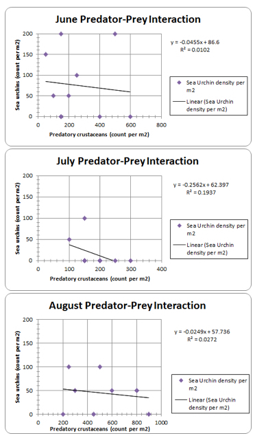

Predator-Prey Relationship Between Crustaceans and Sea Urchins
Writer: Lara Brindisi
Date: Spring 2016
Citation: Brindisi, L., Feehan, C. & Adams, D. (2016). Predator-Prey Relationship Between Crustaceans and Sea Urchins. Rutgers Research Review, 1(1).
My name is Lara Brindisi and I am a third-year student in the School of Environmental and Biological Sciences. I am majoring in Biological Sciences and earning a certificate in Environmental Geomatics. My research experience in marine biology, forestry, and landscape ecology all interconnect with conservation ecology. After I complete my undergraduate degree, I will apply to graduate schools in fields related to conservation with the aim of amending environmental issues.
Predator-prey relationships can promote the successes or failures of interacting populations. If the intensity of predation is too great, prey populations become susceptible to diminishing towards collapse. Likewise, if predation pressures are too weak, prey populations can rise above their carrying capacity until their environments and resources become degraded, potentially causing population collapse (Cain et al., 2014). In cases where the origins of mass mortalities or recoveries remain largely unknown, studying predator-prey relationships can provide insight on the potential causes and effects of these events.
Diadema antillarum (long-spined sea urchin) is hypothesized to be a keystone species in managing the health of coral reefs. In the Florida Keys, the benthic, or bottom-dwelling, herbivores consume turf algae, supporting the coral-dominated landscape (Edmunds & Carpenter, 2001). However, when D. antillarum's population experienced mass mortality in the Caribbean in the 1980s, algae growth intensified, shifting the coral reefs to an algal-dominated landscape (Knowlton, 2001). Knowlton (2001) and various other studies have attributed the die-off to disease.
Explanations for recent anecdotal recoveries of D. antillarum remain largely speculative. Knowlton (2001) hypothesizes that the population could have rebounded from surviving patches of upstream urchin density maintaining fecundity. Further, Edmunds & Carpenter (2001) support that a reduction in macroalgae cover encouraged a feedback loopEO less macroalgae cover promoted a more favorable environment, expanding sea urchin density and therefore increasing fertilization rates.
While some areas are experiencing population recovery in the Caribbean, much of the eastern Atlantic is still reduced to 2-7% of its original urchin density (Knowlton, 2001). Predator-prey relationships could be a potential limitation for sea urchin recovery. Kintzing (2010) observed a predator-prey relationship between the predatory crustacean Panulirus guttatus (spiny lobster) and D. antillarum, and hypothesized that this relationship contributed to algal domination of the reefs, directly and indirectly .This study seeks to learn more about the underlying mechanisms encouraging and discouraging the recovery of D. antillarum in the Caribbean and eastern Atlantic. Focusing on the population densities of recently settled juvenile predatory crustaceans and sea urchins, including D. antillarum, will provide insight on whether predator-prey interactions are a potential limitation on sea urchin population recovery, and therefore coral reef stability.
Field collections were conducted between June and August 2015 along a 50 km range of the Florida Reef Tract in the Florida Keys. The sites include: East East Turtle (24.733° N, 80.913° W), East Washerwoman (24.665°N, 81.074°W), 11’ Mound (24.724° N, 80.862° W), East Stag Party (24.778° N, 80.736° W), Delta Shoal (24.635°N, 81.092° W), Lost and Found (24.709°N, 80.870° W), and Tennessee Reef (24.746° N, 80.784° W). The study followed a stratified random sampling design with 2 collectors sampled for recently settled sea urchins and predatory crustaceans at 5 km intervals. Each collector contained a settlement panel composed of 0.1 m2 pieces of Astroturf, attached 2 m from the sea floor. Settlers were inventoried by method of reverse filtration through a Nitex mesh filter and stored in 95% ethanol solutions. Samples were microscopically sorted and counted according to benthic group category, including sea urchins, sea stars, crustaceans, and fish. The predator-prey relationship between crustaceans and sea urchins was analyzed using simple linear regression analysis for samples collected in three months: June, July, and August.
To examine whether predation on sea urchins is limiting recovery of populations following disease outbreaks, we tested the hypothesis that an inverse relationship exists between predatory crustaceans and sea urchins. This study did not confirm a relationship between predatory crustaceans and sea urchins. The regressions analysis was non-significant for June, July and August (June: F = 0.08, p=0.7812; July: F = 1.92, p=0.2031; August: F = 0.20, p=0.6716), providing no evidence for a negative correlation between sea urchin and predatory crustacean density on settlement collectors (Figure 1). The coefficients of correlation for each month were very low (June: R2=0.01; July: R2=0.19; August: R2=0.03). The data suggests that minimal variability in sea urchin density is explained by predatory crustacean density.

Figure 1: Relationship between sea urchin and predatory crustacean count (per m2) on settlement collectors in June, July and, August 2015 in the Florida Keys. Trend lines indicate linear regressions described by the equations within each panel.
The data from June through August 2015 suggests that other factors function more prominently in controlling sea urchin populations than predatory crustacean density. The nonsignificant correlations demonstrate that the ecological interactions are more complex than a predator-prey relationship, and require further investigation. The next phase of this study would be to research other influences on sea urchin recovery, such as the role of other predators, the densities of lobsters in various life phases, seaweed density and the associated sediment, reef community composition, and the percentage of various types of algal cover. In the future, this study seeks to complete a mixed effects linear regression model analysis of the multiple possible explanatory variables.
Discovering the source of failure for D. antillarum population recovery in the Florida Keys influences the current conservation method of coral reefs. With more knowledge on the mechanisms that sustain sea urchin populations, proper action can be taken to protect them and encourage their population growth. Such enhancement could return the Caribbean reefs to a coral-dominated environment, increasing biodiversity and sustainability.
References
- Cain, M.L., Bowman, W.D., & Hacker, S.D. (2014). Predation and Herbivory. In Ecology (3rd ed.), (pp. 295-315). Massachusetts: Sinauer Associates, Inc.
- Edmunds, P.J., & Carpenter, R.C. (2001). Recovery of Diadema antillarum reduces macroalgal cover and increases abundance of juvenile corals on a Caribbean reef. Proceedings of the National Academy of Sciences of the United States of America, 98(9), 5067-5071.
- Kintzing, M. (2010) Impacts of the spotted spiny lobster (Panulirus guttatus) on the long-spined sea urchin (Diadema antillarum) and patch reef communities in the Florida keys (Unpublished doctoral dissertation). Old Dominion University, Virginia.
- Knowlton, N. (2001). Sea urchin recovery from mass mortality: New hope for Caribbean coral reefs? Proceedings of the National Academy of Sciences of the United States of America, 98(9), 4822-4824.